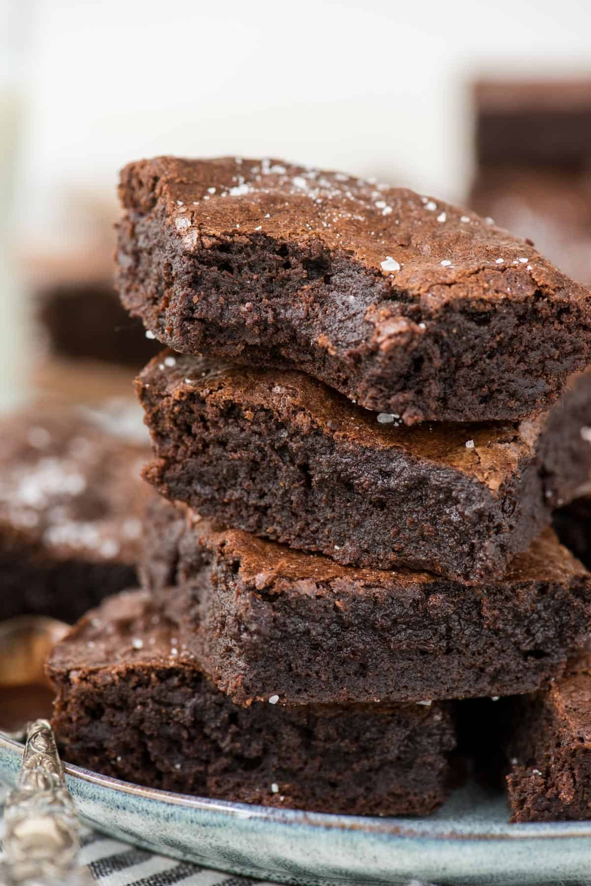

Brownies

Description
Everybody says their brownies are the best, but these really are the best. They feature the "holy trinity" of brownie perfection-a crispy, flaky top, chewy edges, and a fudgy center. Serve with a glass of ice cold milk.
Ingredients
- cup white sugar
- 2 tablespoons butter
- 2 tablespoons water
- 1 1/2 cups semisweet chocolate chips
- 2 large eggs, beaten
- 1/2 teaspoon vanilla extract
- 2/3 cup all-purpose flour
- 1/2 teaspoon salt
- 1/4 teaspoon baking soda
Steps
- Preheat the oven to 325 degrees F (165 degrees C). Grease an 8-inch square pan.
- Combine sugar, butter, and water in a medium saucepan; cook and stir over medium heat until boiling. Remove from heat and stir in chocolate chips until melted and smooth; mix in eggs and vanilla. Combine flour, salt, and baking soda; stir into the chocolate mixture. Spread brownie batter evenly into the prepared pan.
- Bake in the preheated oven until top is dry and edges have started to pull away from the sides of the pan, about 20 to 30 minutes. Let cool completely before cutting into squares.